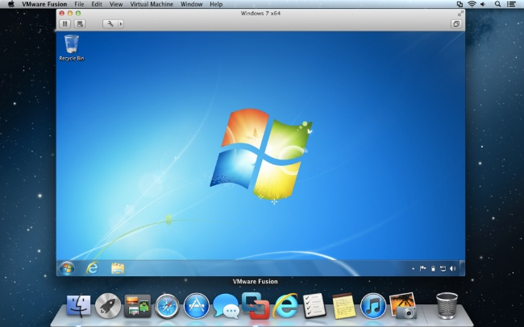
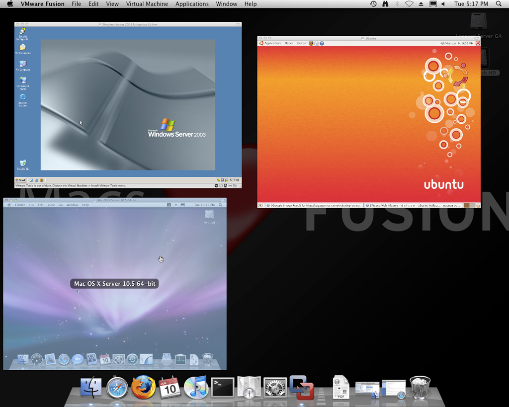

Máquinas Virtuales
Introducción usando VirtualBox
¿Qué es una máquina virtual?
En informática entendemos a una máquina virtual como un programa que es capaz de comportarse como una computadora real y puede ejecutar otros programas como si de una máquina real se tratase.
¿Cómo es esto posible?
En la informática conviven 2 grandes mundos en una perfecta simbiosis...
Hardware
Lo tangible. Lo material. El mundo de lo físico.

Software
Lo intangible. Las ideas. El mundo "espiritual".
Computadora
Hardware + Software
Mujeres operarias de la ENIAC (primera computadora de propósito general).
¿Y entonces?
Virtualización

El proceso de virtualización consiste en la utilización de un software que cuando se ejecuta, se comporta como un hardware.
Máquina Virtual
Será entonces un conjunto de recursos tecnológicos virtuales que "simulan" ser un recurso real.
Virtual Box
- Multiplataforma.
- Gratuito.
- Fácil de usar.
- ¡¡Software Libre!!